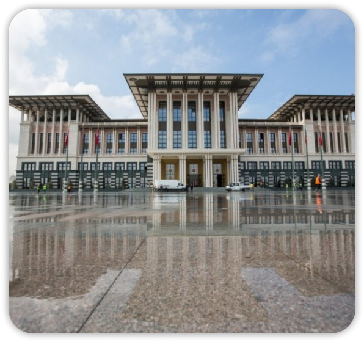
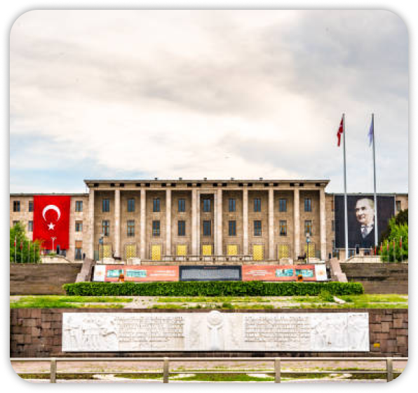

Pemerintahan Turki
Turki merupakan negara dengan sistem republik presidensial. Sejak 2018, sistem pemerintahan berubah dari parlementer menjadi presidensial.
Pemerintahan Turki
Turki merupakan negara dengan sistem republik presidensial. Sejak 2018, sistem pemerintahan berubah dari parlementer menjadi presidensial.




Pemerintahan Turki
Turki merupakan negara dengan sistem republik presidensial. Sejak 2018, sistem pemerintahan berubah dari parlementer menjadi presidensial.

Mata Pencaharian
Mata pencaharian utama di Turki sangat beragam karena statusnya sebagai negara ekonomi berkembang yang kuat, dengan sektor pertanian, industri, dan jasa yang menjadi pilar utama. Secara global, Turki dikenal sebagai salah satu produsen komoditas tertentu terbesar di dunia.

Pertanian
Turki adalah produsen pertanian terbesar di kawasan ini. Negara ini merupakan penghasil hazelnut dan aprikot terbesar di dunia. Selain itu, Turki juga menjadi produsen utama gandum, kapas, tomat, serta berbagai buah-buahan dan sayuran lainnya.

Industri & Manufaktur
Sektor ini merupakan penggerak utama PDB Turki. Industri otomotif adalah salah satu yang paling dominan, di mana Turki menjadi pusat produksi kendaraan komersial untuk pasar Eropa. Selain itu, industri tekstil, elektronik, dan kimia juga berkembang pesat.

Perdagangan
Berkat posisinya sebagai "Jembatan antara Timur dan Barat", Turki adalah hub logistik internasional. Jalur laut seperti Selat Bosphorus sangat vital untuk perdagangan dunia, dilewati oleh puluhan ribu kapal kargo setiap tahunnya.

Pariwisata
Turki adalah salah satu destinasi wisata paling populer di dunia. Mata pencaharian penduduk di sektor ini mencakup jasa perhotelan, pemandu wisata, dan transportasi. Ikon wisata seperti Cappadocia dan Hagia Sophia di Istanbul menarik jutaan turis mancanegara setiap tahun.

Perikanan & Peternakan
Turki memiliki potensi besar dalam akuakultur (budidaya air) karena dikelilingi oleh tiga laut utama. Di sektor peternakan, Turki memproduksi jutaan ton daging unggas, telur, dan madu setiap tahunnya. Peternakan domba dan sapi juga tersebar luas di wilayah Anatolia.

Suku & Ras Turki
Secara umum, penduduk Turki termasuk dalam kelompok ras Kaukasoid (Eurasia Barat) dengan pengaruh Asia Tengah, Timur Tengah, dan Eropa. Turki adalah negara multietnis dengan berbagai suku yang hidup berdampingan.
Mata Uang Turki
Turki merupakan negara dengan sistem republik presidensial. Sejak 2018, sistem pemerintahan berubah dari parlementer menjadi presidensial.Mata uang resmi Turki adalah Lira Turki (Turkish Lira), yang dilambangkan dengan ₺ dan memiliki kode mata uang TRY.